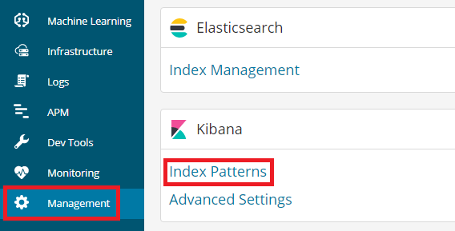
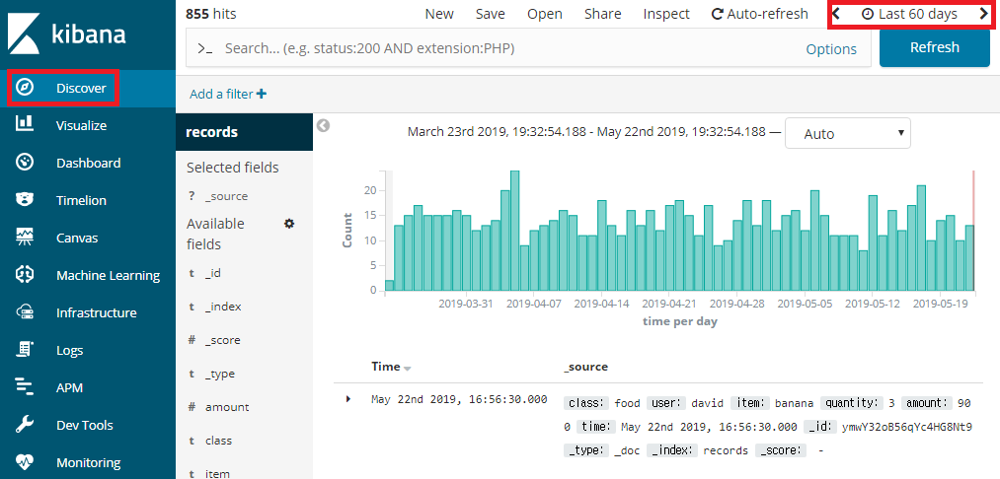

Elastic Stack - Kibana 편
정형 및 비정형 데이터를 시각화하고 분석하는데 용이한 Elastic Stack을 사용하는 법을 알아보겠습니다.
이 글은 Ubuntu 18.04.2 LTS 사용자를 대상으로 작성했습니다.
1. Kibana 설치
1) Kibana를 다운로드 받습니다.
1 | wget https://artifacts.elastic.co/downloads/kibana/kibana-6.5.0-amd64.deb |
다른 버전의 설치 링크를 알고 싶으시다면 https://www.elastic.co/kr/downloads/past-releases를 방문하시면 됩니다.
URL의 6.5.0 부분을 원하시는 버전으로 바꾸시면 그 버전이 다운로드 됩니다.
Kibana 6.0.0 이상의 버전은 64bit 운영체제만 지원합니다
2) dpkg 명령어를 이용해 Kibana를 설치합니다.
1 | sudo dpkg -i kibana-6.5.0-amd64.deb |
Kibana는 다음과 같은 위치에 설치 됩니다.
| 내용 | 위치 |
|---|---|
| 설치 경로 | /usr/share/kibana |
| 설정 파일 경로 | /etc/kibana |
| 데이터 저장 경로 | /var/lib/kibana |
| 실행 파일 경로 | /etc/init.d/kibana |
3) 서버가 시작 될 때 자동으로 시작되게 설정합니다.
1 | sudo systemctl enable kibana.service |
4) option : Kibana 삭제 방법
1 | sudo dpkg --purge kibana |
2. Elasticsearch와 연동하기
Elasticsearch와 Kibana를 같은 서버에서 구동하면 딱히 설정할 게 없지만
다른 서버에서 구동하면 /etc/kibana/kibana.yml을 수정해야 합니다.
파일에서 아래의 부분을 본인의 Elasticsearch 서버의 주소로 바꾸시고 앞의 주석 처리를 없앱니다.
1 | #elasticsearch.url: "http://localhost:9200" |
3. 실행하기
1 | Kibana 시작 명령어 |
아래 링크에 웹브라우저로 접속해서 정상적으로 실행이 되었는지 알 수 있습니다. Kibana 시작 되는 데 시간이 좀 걸리므로 1분 정도 지나서 시도해 주시길 바랍니다.
1 | curl -v http://localhost:5601 |
아래와 같이 뜨면 실행이 되고 있다는 뜻입니다.
1 | Note: Unnecessary use of -X or --request, GET is already inferred. |
4. 로그 보기
Kibana는 기본적으로 로그를 파일에 저장하는 것이 아니라 stdout에 출력하므로 로그를 보시려면 다른 방법을 사용해야 합니다 Kibana의 로그를 보고 싶다면 아래의 명령어를 입력하시면 됩니다.
1 | journalctl -u kibana.service -e |
또는 Kibana의 설정파일을 수정하시면 됩니다.
/etc/kibana/kibana.yml
1 | logging.dest: /var/log/kibana.log |
5. Elasticsearch 데이터 보기
- Management - Index Pattern을 클릭합니다.

- Index Pattenr을
records라고 입력하고 다음으로 넘어갑니다.
- Time filter field name을
time이라고 설정하고 완료합니다.

- Discover에 들어가서 우측 상단의 시간을 적절히 조정하시면 우리가 저번에 넣었던 데이터 1000개를 볼 수 있습니다.
6. 80번 포트로 실행시키기
/etc/kibana/kibana.yml에서 포트를 그냥 80번으로 변경한 뒤 실행하면 그 포트를 사용하지 못한다는 에러가 발생합니다.
sudo service kibana start 명령어가 Kibana를 root 권한으로 실행시키지 않아서 발생하는 에러 입니다.
따라서 service가 Kibana를 root 권한으로 실행시키도록 수정해야 합니다.
1 | sudo vi /etc/kibana/kibana.yml |
Elastic Stack - Kibana 편